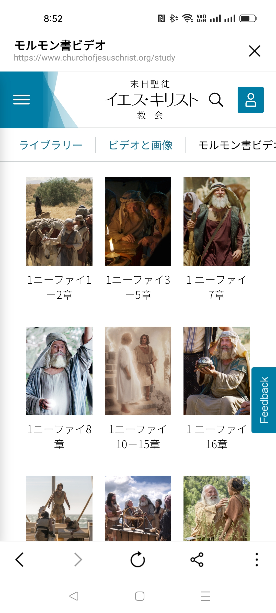

![]( "ベンソン大管長")
科目：「275 モルモン書の教えと教義」
わたしたちの宗教のかなめ石である。そして，人はその教えを守ることにより，
ほかのどの書物にも増して神に近づくことができる。（モルモン書の序文，6段落）
2025年 9月13日(土曜日)～12月13日(土曜日)まで
毎週土曜日 19:30～21:00 @藤沢ワード
●開会の讃美歌：「11 感謝を神に捧げん」
2. 黒雲迫り来て 平和を乱すとき
明るき希望あり 救い近きを知る
主に疑いはなし 日々に証あかしを持つ
シオンに逆らう者 ついに打ち倒されん
| 日付 | 単元 | 課 | 読書課題 |
| 2025年11月22日 第11週 /14 |
現代の霊的な危険を暴く | 第21課 高慢の克服 | ●モルモン書ヤコブ2：12－16 ●モルモン8：35－37 ●モルモン書ヤコブ2：17－21 |
| 第22課 末日の偽りの教義から自分自身を守る | ●モーサヤ27：1－4 ●アルマ30：7－9，11 ●アルマ46：11－13，19－20 |
||
| 欠席の場合の補習課題 | 読書課題から印象に残った箇所を説明する文章を送信してください。 |
◎最近の話題 Church News から
2025年11月21日 - ソルトレイクシティ 公式声明
女性も18歳からイエス・キリスト教会の宣教師として奉仕できる大管長会
「(Google翻訳)大管長会は、専任宣教師として奉仕することを選んだ若い女性は、高校卒業またはそれと同等の資格を取得後、18歳で宣教師としての奉仕を開始できることを、直ちに発表できることをうれしく思います。
主は、神権の責任の一環として、ふさわしく能力のあるすべての若い男性に伝道の準備と奉仕を求めていますが、若い女性にとって伝道奉仕は依然として任意の機会であることを改めて強調します。専任宣教師として奉仕することを希望する若い女性にとって、伝道を始める年齢の選択は、人によって異なることを私たちは認識しています。」
2025年 11月 20日 - ソルトレイクシティ 公式声明
2025年 大管長会クリスマスメッセージ
「わたしたちは救い主イエス・キリストを覚えることに喜びを感じます。イエスはつつましい環境でお生まれになり天の御使いたちが主の降誕を告げました。イエスは悔い改めと希望、永遠の命の福音を説かれました。
目の見えない人の目を開かれ、耳の聞こえない人を聞こえるようにし、あらゆる病を癒し、死者をよみがえらせられました。イエスは天の御父の独り子、神の霊の子供たちの長子であられます。主の犠牲と無限の贖罪を通して、わたしたちは従順と悔い改めによって神と和解することができます。
光と善意に満ちたこの時期に、わたしたちはイエス・キリストとその永遠の幸福の計画を喜びます。主と主の平安の祝福を求めるよう、皆さんをお招きします。メリークリスマス！
大管長会」
=========== (第21課 1) 自分の生活をむしばむ高慢の影響を見分けるにはどうすればいいだろうか
モルモン書ヤコブ2：12－16
12さて見よ、わたしの同胞よ、わたしがあなたがたに告げ知せる言葉は次のとおりである。あなたがたと子孫のための約束の地であるこの地に非常に豊富にある金や銀、そのほかあらゆる貴重なあらがねを、あなたがたの多くは探し求めるようになってきた。
13このようにしてあなたがたは、神の御心の御手があなたがたにほほえんで、たくさんの富を手に入れた。ところがある者たちは、ほかの者より豊かに富を得たことで心が高慢になり、また自分の衣服が高価なことで強情になって高かぶり、さらに、自分はほかの者よりも優れていると思って同胞を苦しめている。
14さて、わたしの同胞よ、あなたがたはこのようなことを行なっていて、神から義とされると思うか。見よ、わたしはあなたがたに言う。そうではない。かえって神はあなたがたを罪に定められる。このようなことを続けるならば、神の裁きが速やかに下るに違いない。
15おお、神があなたがたを刺し貫ぬき、一目であなたがたを地に打ち倒すこともおできになることを、あなたがたに示めされるように。
16おお、神があなたがたを、この罪悪と忌まわしい行いから解き放してくださるように。おお、あなたがたが神の命じられる御言葉を聴き、心の高慢によって霊に滅びを招ねかないように。
35 見よ、わたしはあなたがたがここにいるかのように語っているが、あなたがたはまだこの世にいない。しかし見よ、イエス・キリストがわたしにあなたがたを見みせてくださったので、わたしはあなたがたが行おこなうことを知っている。
36 わたしは、あなたがたが心を高慢にして歩くことを知っている。心を高慢にして高ぶることをしない者はわずかしかいない。高慢な者は、非常に華やかな衣服を着て、ねたみや争い、悪意、迫害、またあらゆる罪悪に染まる。また、あなたがたの教会、まことにすべての教会は、あなたがたの心が高慢なために汚れたものになってしまった。
37 見よ、あなたがたは、貧しい人と乏しい人、病人と苦しんでいる人を愛する以上に、金銭や財産、華やかな衣服を愛し、あなたがたの教会を飾ることを大切にする。
●エズラ・タフト・ベンソン大管長の教え ～ 高慢（1989年）ヒンクレー大管長による代読
ほとんどの人は，高慢を「自己中心」「うぬぼれ」「自慢」「尊大」「傲慢」のことだと思います。確かにこれらはそれぞれ高慢の罪の要素ではありますが，核となるものが抜けています。
高慢の中心を成すのは敵意，つまり，神と同胞に対する敵意です。 「敵意」は「憎悪，敵対心，反抗」を意味します。サタンは， この力によってわたしたちを支配しようとします。
基本的に，高慢の本質は競争心です。自分の思いを神の御心と競わせるのです。……
高慢な人は，自分の生活を律する神の権能を認めることができません。（ヒラマン12：6）……
高慢な人は，自分の知性，意見，仕事，財産，才能など，この世的な尺度をもって張り合い，すべての人を敵に回します。C・S・ルイスはこう書いています。「高慢な者は何かを所有しただけでは喜ばない。 人より多く持って初めて喜ぶのである。……人を高慢にするのは比較である。すなわち，自分は他の人たちよりも優れているという優越感である。競争心という要素がなくなれば，高慢もその姿を消すのである。」（『キリスト教精神』，ニューヨーク：マクミラン社，1952年，109－110）……
人にどう思われているかを恐れる人は，人の賞賛を求めて争うようになります。……
……多くの人は高慢の罪を犯すのは，金持ちや学者のように社会的地位や権力があって，ほかの人を見下す人だと考えています（2ニーファイ9：42参照）。しかし，それ以上にわたしたちの間に広がっている病があります。それは……見上げる高慢さです。これは，あら探し，うわさ話，中傷，不平，収入以上の生活，そねみ，うらやみ，人を高める感謝の念や賞賛の言葉の欠如，人の過ちを赦さない不寛容さ，嫉妬など様々な形で現れます。
（「高ぶりを心せよ」5，6）」
=========== (第21課 2) 高慢の罪はどのように克服できるだろうか
17 同胞を自分自身のように思いなさい。そして、すべての人と親しくし、あなたがたのように彼らも豊かになれるよう、所有物を惜しみなく与あたえなさい。
18 しかし、富を求める前に神の王国を求めなさい。
19 キリストに望みを抱いてから富を求めるならば、富は得れるであろう。しかし、富を求める目的は、裸でいる者に着せ、飢ている者に食物を与え、束縛されている者を自由にし、病人や苦しんでいる者を救うなど、善を行うことである。
20 さて、わたしの同胞よ、わたしは高慢についてあなたがたに語った。神から与えられたものを心の中で誇って、隣人を苦しめ悩まし、虐げてきた者よ、あなたがたは今そのことをどのように考えているか。
21 このようなことは、すべての人を造られた御方にとって忌わしいことであるとは思わないか。神の目には、人は皆等しく貴とい存在である。すべての人はちりから造られている。そして、神の戒めを守り、とこしえに神をあがめるという同一の目的をもって、神により造られたのである。
12 そして民は、彼らの富と学問の機会多少に応じて階級に区別され始めた。まことに、貧しいために無学な者もいれば、富んでいたので大いに教育を受けた者もいた。
13 高慢になった者もいれば、非常に謙遜な者もいた。そしる者にそしり返す者もいれば、そしりや迫害やあらゆる苦難を受けながらも、向き直ってののしり返すことをせず、神の前にへりくだって悔いる者もいた。
14このように、全地にひどい不平等が生じたために、教会が分裂し始めた。まことに第三十年には、真実の信仰に帰依している少数のレーマン人の中の教会を除いて、全地の教会が分裂してしまった。この少数のレーマン人は堅く確固として動かず、喜んで力の限り主の戒めを守っていたので、真実の信仰から離れようとしなかった。
●ベンソン大管長
「高慢の治療薬は謙遜です。柔和と従順です。（アルマ7：23）…… 自分からへりくだる道を選びましょう。 わたしたちは，兄弟姉妹に対する憎しみを克服し，彼らを自分自身のように尊び，また自分以上に尊重することによって，進んでへりくだることができます。〔教義と聖約38：24〕。 勧告と懲らしめを受け入れる人は，自分の意思で謙遜になる道を選べます。〔モルモン書ヤコブ4：10〕 わたしたちは，自分を傷つけた人を赦すことにより，進んでへりくだる方を選ぶことができます。〔 3ニーファイ13：11，14；教義と聖約64：10〕 また，無私の奉仕を行うことによっても，進んでへりくだることができます。〔モーサヤ2：16－17〕 伝道に出て，人を謙遜にする神の御言葉を宣べ伝えるなら，自分からへりくだる道を選ぶことができます。〔アルマ4：19〕 もっと頻繁に神殿に参入することにより，自らへりくだることができます。 罪を告白して，悪を捨て，神によって生まれる人は，自分の選びによって謙遜になることができます。〔教義と聖約58：43〕 そして，神を愛し，自分の思いを神の御心に服従させ，神を第一にした生活を築きあげることによって，わたしたちは進んでへりくだることができるのです。〔3ニーファイ11：11〕」
（「高ぶりを心せよ」7）
●「高慢と神権」 ディーター・F・ウークトドルフ管長
22課
シーレムのビデオ
ヤコブ7:5.8.11.12
ラズバンド長老の言葉
アルマ1:2-4
オークス管長の言葉
バラード長老の言葉
=========== (第22課 １) 宗教の自由によって，どのようにわたしの信条とそれに従った生活は守られているだろうか
●モーサヤ27：1－41 さて，不信仰な者たちが教会員に加える迫害が非常にひどくなったので，教会員はつぶやき，その件について指導者たちに訴ったえ始めた。そこで，指導者たちはアルマに訴ったえた。アルマはその件を王であるモーサヤの前に持ち出し，モーサヤは祭司たちに意見を求めた。
2 そしてモーサヤ王は，不信者は神の教会に属している者を迫害してはならないと，周辺の全地に布告を出した。
3 また，すべての教会に次のような厳しい命令が出だされた。すなわち，教会の中に迫害があってはならない。すべての者は平等でなければならない。
4 高慢あるいは傲慢になって，平和を乱すようなことがあってはならない。すべての者は隣人を自分自身のように尊ばなければならない。また，自分自身の手で働いて生活の糧を得なければならない。
7 このときには，人の信条を禁止する法律はなかった。人々を不平等な立場に置く法律があることは，まったく神の戒めに反していたからである。
8 聖文には，「あなたがたの仕える者を，今日，選びなさい」とある。
9 そこで，もし人が神に仕えたいと思うならば，神に仕える特権があった。いや，その人が神を信じるならば，神に仕える特権があった。しかし，たとえ人が神を信じなくても，その人を罰する法律はなかった。
10 しかし，人殺しをすれば，その人は死刑に処せられた。また，略奪する者も罰っせられ，盗む者も罰っせられ，姦淫を行う者も罰っせられた。まことに，すべてこのような悪事を行う者は罰っせられた。
11 人々は罪科に応じて裁かれるという法律があったからである。にもかかわらず，人の信教に反対する法律はなかった。したがって，人は自分の行なった犯罪についてだけ罰せられたので，すべての人が平等な立場にあった。
Q. コリホルにはなぜそのような考え方を広める権利があったのでしょうか。
コリホルが神を信じないという彼の考えを述べる権利があったのと同様に，アルマも天の御父とイエス・キリストが生きておられることを証する自由がありました。アルマの言葉を信じないことを選択したコリホルは，神からのしるしを要求して，ものが言えなくなってしまいました。このことが広く知れ渡ると，コリホルの教えを信じていた人々は，自分の間違いを悟って，「再び主に帰依」しました（58節）。
29 さて，大祭司と大さばきつかさは，コリホルの心がかたくなであるのを見ると，また彼が神さえもののしろうとするのを見ると，彼の言葉にまったく応じることなく，彼を縛らせて役人の手に引き渡たし，ゼラヘムラの地へ送くった。それは，彼をアルマと全地の総督である大さばきつかさの前に引き出だすためであった。
30 さてコリホルは，アルマと大さばきつかさの前に引き出されても，ギデオンの地で語ったように語り，不敬な言葉を吐き続けた。
31 また彼は，アルマの前で大言壮語し，祭司たちと教師たちをののしり，彼らは民の労苦によって飽きるほど食べるために先祖の愚かな言い伝えで民を惑わしていると言って彼らを非難した。
32 そこで，アルマは彼に言った。「あなたは我々が民の労苦で飽きるほど食べるようなことはしていないことを知っている。見よ，わたしは，民に神の御言葉を告げ知らせるために何度も国の方々を旅したが，さばきつかさの統治の初めから今に至るまで，自分の手で働らいて生活の糧(かて)を得てきた。
33 またわたしは，教会で多くの務めを果してきたが，これまで自分の働きに対して一セナインも報酬を受けたことはなかった。わたしの同胞も，さばきつかさの職を務める者のほかは皆そうである。そして，さばきつかさの職にある者も，法律に定められたとおり，務めた時間の分の報酬を受けるだけである。
34 では，もし教会での働らきに対して何も報酬を受けないとすれば，我々は，真理を告げ知らせて同胞の喜ぶのを見て喜びとするほかに，どのような得があって教会で働らくのであろうか。
35 また，あなた自身，我々が何の報酬も受けていないことを知っているのに，どうして我々が利を得るためにこの民に教えを説いていると言うのか。また，あなたは，この民の心の中にこのような喜びが満ちているのは，我々がこの民を欺むいているためだとでも思っているのか。」
36 するとコリホルはアルマに，「そのとおり」と答えた。
37 そこで，アルマは彼に，「あなたは神がましますことを信じるか」と尋ずねた。
38 すると彼は，「いや」と答えた。
39 また，アルマは彼に言った。「あなたは神がましますことをまたもや否定し，キリストも否定するのか。見よ，あなたに言う。わたしは神のましますことと，将来キリストが来られることを知っている。
40 あなたは何の証拠があって神は実在せず，またキリストは来られないと言うのか。あなたの言葉のほかには何一つ証拠がないと，わたしはあなたに告げる。
41 しかし見よ，わたしはすべての事物をもって，これらのことが真実であると証しする。また，これらのことが真実であることを証しするすべての事物があなたにもあるのである。それでもあなたは，これらのことを否定するつもりか。あなたはこれらのことが真実であることを信じるか。
42 見よ，わたしは，あなたが信じていることを知っている。ところがあなたは偽りを言う霊に取つかれている。あなたが自分に神の御霊が宿らないように遠ざけてしまったので，悪魔があなたを支配する力を持ったのである。そして，悪魔は神の子たちを滅ぼすために様々な策略を働らかせ，あなたを方々に行かせるのである。」
43 すると，コリホルはアルマに，「もしあなたが，神のいることを確信させるしるしをわたしに見せ，まことに，神に力のあることを示してくれるなら，あなたの言葉が真実であることを納得するだろう」と言った。
44 しかし，アルマは彼に言った。「あなたはすでに数々のしるしを十分に持っている。あなたは神を試みようとするのか。あなたの同胞(はらから)であるこのすべての人の証しと，すべての聖なる預言者たちの証しがあるのに，あなたは『しるしを見せてくれ』と言うのか。あなたの前に聖文が置いてある。まことに，万物は神がましますことを示している。まことに，大地も，大地の面にある万物も，大地の運動も，また各々の整然と運行しているすべての惑星も，それらのすべてが至高全権の創造主がましますことを証ししている。
45 それでも，あなたは方々を歩き回ってこの民の心を惑わし，神は実在しないと彼らに証しするつもりか。また，あなたはそれでも，このように証しするすべてのものに逆らって否定するつもりか。」するとコリホルは，「そのとおり。しるしを見せてくれないかぎり，わたしは否定する」と答えた。
46 そこでアルマは彼に言った。「まことに，あなたの心がかたくなであって，なおも真理の霊に逆らって霊の滅びを招こうとしていることを，見よ，わたしは嘆げかわしく思う。
47 しかし見よ，あなたが仲立ちになって，あなたの偽りとへつらいの言葉により多くの人を滅びに至せるよりは，むしろあなた自身が滅びる方がよい。したがって，もしあなたがもう一度否定するならば，まことに神はあなたを打たれるであろう。あなたは物が言えなくなり，二度と口を開くことができず，もはやこの民を欺むくことができなくなるであろう。」
48 ところが，コリホルはアルマに，「わたしは神の存在を否定はしないが，神がいるとは信じない。だから，神がいることはあなたたちには分らないと言っているのだ。しるしを見せてくれなければ，わたしは信じない」と言った。
49 そこで，アルマは彼に，「あなたにしるしを示めそう。あなたはわたしの言うとおり物が言えなくなるというのがそれである。わたしは神の御名によって言う。あなたは物が言えなくなり，今後二度と口を利くことができないであろう」と言った。
50 アルマがこの言葉を言い終えると，アルマの言葉のように，コリホルは物が言えなくなり，語ることができなくなった。
51 さて，大さばきつかさはこれを見ると，手を差し伸べてコリホルに書き示めし，「あなたは神の力を認めるか。あなたはだれにしるしを示すようにアルマに求めたのか。あなたにしるしを示すために，彼がほかの人々を苦しめることを願ったか。見よ，彼はもうすでにあなたにしるしを示した。それでもなおあなたは反論するか」と告げた。
52 するとコリホルも，手を差し伸べて書き示し，言った。「わたしは今，話すことができないので，物が言えなくなったことを認めます。また，神の力によるのでなければ，わたしにこのようなことが決っして起きないことも，わたしは知っています。また，わたしは神がましますことを前から知っていました。
53 しかし見よ，悪魔がわたしを欺むいたのです。悪魔は天使の姿でわたしに現われて，『この民は皆，未知の神を求めて迷っているので，行って改心させよ』と言いました。また悪魔はわたしに，『神はいない』と言い，わたしが言うべきことも教えてくれました。そこで，わたしは悪魔の言葉を教えてきました。わたしは，悪魔の言葉が肉の思いに快ろよいので，それを教えてきたのです。また，わたしはそれを教えてついに大きな成功を収めたので，自分でもそれが真実だとまったく信じるようになりました。このようなわけで，わたしは真理に逆らい，とうとうこの大きなのろいを招いてしまいました。」
54 さて，コリホルはこのように言うと，そののろいが取り去られるように神に祈ってほしいとアルマに懇願した。
55 しかし，アルマは彼に，「こののろいがあなたから取り去られると，あなたはまた，この民の心を惑わすようになるであろう。だから，主が望まれるとおりになるがよい」と言った。
56 そして，そののろいはコリホルから取り去られなかった。そして，彼は追い出され，食物を請うて家々を巡るようになった。
57 一方，コリホルの身に起ったことは，すぐ全地に告げ知らされた。まことに，大さばきつかさが国のすべての人に布告を出し，コリホルの言葉を信じた人々に，同じ裁きを受けることのないように速やかに悔い改めなければならないと告げたのである。
58 そこで彼らは皆，コリホルの悪事を認め，再び主に帰依するようになった。そして，これによってコリホルに倣った罪悪は後を絶たった。コリホルは家々を巡り，食物を請うて命をつないだ。
●預言者ジョセフ・スミス
「わたしは自分が長老派，バプテスト，あるいは他の宗派の善良な人の権利を守るためにも〔教会員に対するのと〕同じように命を差し出す用意ができていることを，天の前にあえて宣言します。末日聖徒の権利を踏みにじる考え方は，ローマカトリックや，あるいは信者が少なく，自分たちを守る力を持たない宗派の権利をも踏みにじるものです。（『歴代大管長の教え—ジョセフ・スミス』345）」
「わたしたちは，自分の良心の命じるとおりに全能の神を礼拝する特権があると主張し，またすべての人に同じ特権を認める。彼らがどのように，どこで，何を礼拝しようと，わたしたちはそれを妨げない。」（信仰箇条1：11）
=========== (第20課 3) モロナイと自由の旗
Q. 総司令官モロナイが自由を脅かすものから民を守るためにしたことは？
11 さて，ニーファイ人の軍隊の総司令官であったモロナイは，これらの離反について聞き，アマリキヤのことを怒かった。
12 そして，自分の衣を裂いて，その一片を取り，それに「我々の神と宗教，自由，平和，妻子のために」と書いて，竿の先にしっかりとくくり付けた。
13 それから，彼れは自分のかぶとと胸当と盾をしっかりと身に着け，よろいを腰にまとい，先端に裂いた衣を付けた竿を取って（彼はそれを自由の旗と呼んだ），地にひれ伏し，そしてクリスチャンの一団が残ってその地を所有しているかぎり，自分の同胞に自由の祝福をとどめてくださるようにと，熱烈に神に祈った。
19 モロナイはこの言葉を述べてから，民の中に出て行き，裂いた衣の一片に書いた文字がすべての人に見えるように，その裂いた衣を空中で打ち振り，大声で叫けんで言った。
20 「見よ，この地にこの旗を立てて守ろうとする者たちは皆，主の力をもって出て来なさい。そして，主なる神から祝福を頂だけるように，自分たちの権利と宗教を守るという聖約を交そうではないか。
●ロバート・D・ヘイルズ長老
「イエス・キリストの弟子として，わたしたちには志を同じくする信仰心のある人々と手を取り合って，正しいことのために声を上げる責任があります。……
……わたしたちにはこれらの神聖な自由と権利をわたしたち自身と子孫のために守る責任があります。では，わたしたちに何ができるでしょうか。
第1に，情報を得ることができます。信教の自由に影響を与える可能性のある地域社会の問題に注意を向けましょう。
第2に，個々の立場で，同じように信教の自由に関心を寄せる人々と手を取り合って，信教の自由を守るために一緒に働きましょう。
第3に，言葉と行いにおいて，自分の信条の模範となる生活を送ってください。宗教について語るよりも，その教えに沿って生活する方がはるかに重要です。
救い主の再臨は近づいています。この大義にあって遅れを取らないようにしましょう。〔自由の旗を掲げた〕司令官モロナイを思い出してください。〔アルマ46：12〕……民の反応を忘れないようにしましょう。彼らは選択の自由を用いて，「走ってやって来て」，行動するという聖約を交わしました〔アルマ46：21〕。」
（「選択の自由を保ち，信教の自由を守る」112，113）

教会の声明
●末日聖徒イエス・キリスト教会の宗教の自由のための活動を平和的に行うことに関する声明。
「法律によって信教の自由が制限されているところでは，末日聖徒はその法律に従うことが正しいと信じますが，その一方で，それぞれの管轄区域または各国で有効とされる法律的な手段を用い，自分たちの基本的権利の保護を求める努力も行います。
（“Religious Freedom: The Basics” ）
●News Room: "Religious Freedom (宗教の自由)" (以下は、Google翻訳。公式の日本語訳のページはないようです。)
「宗教の自由は、すべての人々の良心を守る基本的人権です。それは私たちが深く信じていることに基づいて考え、表現し、行動することを可能にします。しかし、世界中で、そして米国でも、この自由は侵食されつつあります。教会、宗教団体、個人は、公共の場に参加したり、自分の信念を表明したり、社会で奉仕したりする際に、ますます制限に直面しています。しかし，信教の自由を守り強化するために，教会員や善意のある人々ができることはたくさんあります。
信教の自由が意味するもの
信教の自由は基本的人権であり、合衆国憲法で保障される権利の中で最初のものです。それは、良心の命令に従って、自分が深く信じていることを考え、表現し、行動する権利です。
なぜ信教の自由が必要なのか
宗教の自由、あるいは良心の自由は、多様な社会の健全性にとって極めて重要です。それはさまざまな信仰や信念が繁栄することを可能にします。信教の自由は、宗教の有無にかかわらず、最も弱い立場にある人々を含むすべてのグループと個人の権利を保護します。
末日聖徒にとって信教の自由が重要な理由
末日聖徒はその教えと歴史により、信教の自由に対して特別な取り組みを行っています。200年近くにわたり、末日聖徒の指導者たちはすべての人に対する信教の自由の重要性を教えてきました。「私たちは、自らの良心の命令に従って全能の神を崇拝する特権を主張し、すべての人に同じ特権を認めます。どのように崇拝させるか、どこで、あるいは何が起こるかもしれない。」
宗教が社会にとっていかに重要であるか
宗教は社会において重要な位置を占めています。宗教団体と人々がそのプラスの影響を発揮するには、宗教を実践するための物理的、社会的、法的スペースが必要です。すべての合法的な声は公共の場で聞かれるべきです。宗教的な声も世俗的な声も沈黙させられるべきではありません。宗教は単なる個人的な崇拝ではありません。それには、社会的および道徳的問題に関する公の場での表現が含まれます。
信教の自由が私たちに求めるもの
信教の自由は権利であると同時に義務でもあります。宗教の自由と礼儀は相互に依存しており、各人の固有の尊厳に基づいた相互義務を形成します。宗教団体と宗教者は、自分の意見を合理的かつ敬意を持って表明する責任があります。
=== 付録 １ 年齢の祝福 最近のChurch News から
●「年齢の祝福 — 大管長会に関するホランド長老のエッセイ」
ジェフリー・R・ホランド長老はネルソン大管長、オークス管長、アイリング管長の成熟と判断力について語る
2023年6月1日
5月31日、教会管理棟で行われたささやかな誕生日パーティーは末日聖徒イエス・キリスト教会の歴史に名を残した。そのような環境の中で、大管長会第二顧問ヘンリー・B・アイリング管長は自身の90歳の誕生日を祝った。既に教会史上最も高齢となっている大管長会は、アイリング管長ラッセル・M・ネルソン大管長（98歳）とオークス第一顧問 90歳と、第二顧問ヘンリー・B・アイリング管長90歳とである。
「私たちは皆、彼らの多くの容赦のない広範囲にわたる任務が健康に及ぼす影響を懸念していますが、通常、若さはどんな任務にもエネルギーと活力をもたらすことを知っていますが、それにもかかわらず、90代の男性3人によるこの大管長職は確かな成果をもたらします。彼らの使命に対する特質は、前例のないものであると同時に、ある程度かけがえのないものでもあります。私は、さまざまな責任を担って働く彼らを毎日一日中観察する特権に恵まれた、ほんの一握りの人間のうちの一人です。年配の男性、特にこれらの年配の男性のリーダーシップについて私が学んだことをいくつか提案させてください。・・・」
●「現在の大管長会、十二使徒定員会の在任期間は教会史上6番目に長い」
スコット・テイラー 2023年6月1日
●「末日初：教会には大管長会全体を含む4人の90代の使徒がいる」
「アイリング管長は5月31日に90歳の誕生日を迎え、
98歳のネルソン大管長に加わった。
バラード会長94歳 (10月で95)。
オークス管長90歳」
スコット・テイラー 著 2023年6月1日
●2023 年 6 月 6 日 - ソルトレイクシティ ニュースリリース
「ホランド長老、ゆっくりと十二使徒の奉仕に復帰し始める」(Google翻訳)
「末日聖徒イエス・キリスト教会十二使徒定員会のジェフリー・R・ホランド長老(82歳)は、2023年6月6日火曜日、自身のソーシャルメディアページに自身の健康状態について次のように更新した。新型コロナウイルス感染症から回復し、腎臓の病気で透析を始めたため、少なくとも2か月間、教会の任務や集会からの出席を免除された。
限界まで追い込まれたと感じる日、私たちは信仰を超えて追い詰められることはないということを思い出させられます。古い格言は、「人間の極限状態は神の機会である」です。私たちがどれだけの強さを持っているかは、テストされ、改良され、再度テストされるまでわかりません。
多くの場合、おそらく通常は、人生の困難で要求の厳しい時期が成長期、つまり決定的な時期となります。彼らは私たちを今の私たちから、あるべき姿へと導いてくれるのです。」

=== (end)